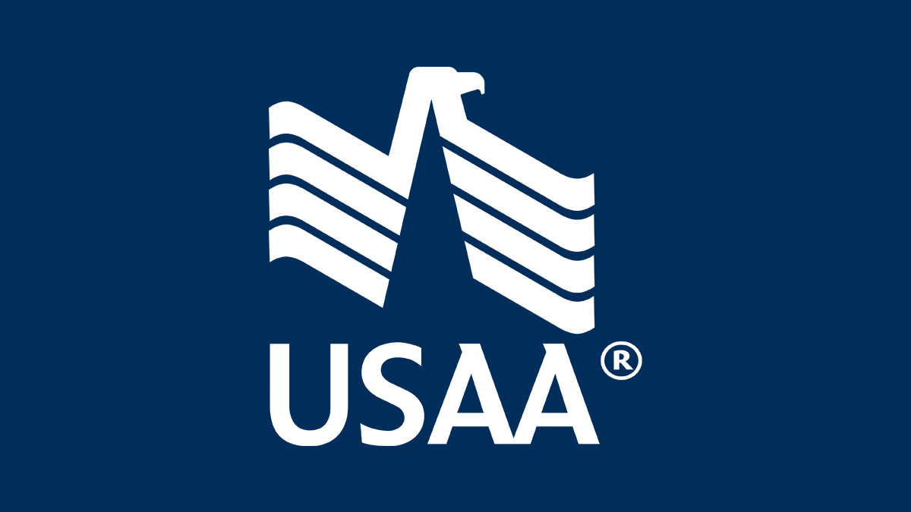

Russell DudekPittsburgh, PA · Planning relocation to Tampa/St. Petersburg
412.287.8640 · russelldudek@gmail.com
linkedin.com/in/russelldudek
russelldudek.github.io/USAA/
Automation Assurance Review
A working canvas for deciding whether to redesign, assist, automate, standardize, improve, or retire a process. Complete with business, process, risk/control, technology, and employee representatives.
1. Member / employee outcome
Need, friction, baseline, target evidence, owner.
2. Process truth
Boundary, stable steps, variants, exceptions, handoffs.
3. Decision and human authority
Rules, judgment, escalation, override, final accountability.
4. Risk and control mapping
Obligation, control owner, evidence, test, fallback.
5. Process intelligence
Mining/monitoring evidence, volumes, variation, bottlenecks.
6. Platform fit
RPA, workflow, API, AI assist, redesign, security, maintainability.
7. Business case and KPIs
Baseline, benefit, total cost, value owner, measurement cadence.
8. Adoption and operating ownership
User behavior, training, support, incident, change, retirement.
Disposition
□ Redesign □ Assist □ Automate
□ Standardize □ Improve □ Retire
Decision owner: ____________________
Review date: ____________________